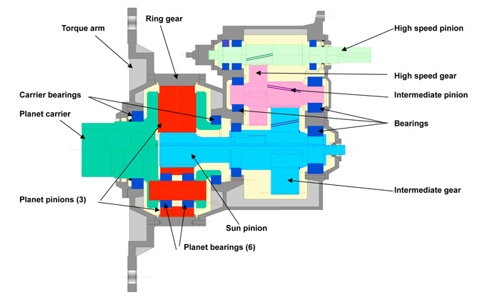
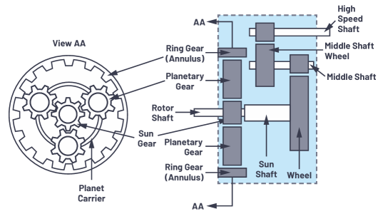

Ziel des Getriebes ist es, das von den mit der Nabe verbundenen Schaufeln erzeugte mechanische Drehmoment an die elektrische Generatorwelle zu übertragen und an die vom Generator benötigte Drehzahl anzupassen.
Die Schaufeln drehen sich mit geringer Drehzahl zwischen 10 U/min und 45 U/min (je nach Modell und Leistung), während der elektrische Generator zwischen 1000 U/min und 2000 U/min dreht, auch je nach Modell und Leistung.
Die folgende Figur zeigt einen Querschnitt eines Getriebes: In diesem Fall enthält es drei Stufen, von denen die erste vom "planetären" Typ ist.

Abb. 1.
Der Eingang (links) wird durch ein Gerät (Planetträger in Grün) erzeugt, das die Energie auf die Planeten (rot) überträgt. Diese Vorrichtung wird durch Lager (Trägerlager), die sich am Gehäuse befinden. Die Planeten sind auf einer Seite mitdas Hohlrad(gezahnter Ring), der am Gehäuse befestigt ist und daher nicht rotiert, und auf der anderen Seite bewegen sie die Sonne (Sonnenritzel) auf der Welle der Zwischenstufe (Zwischengetriebein blau). Das andere Ende dieser Stufe bewegt das Zahnrad der nächsten Stufe, das das Abtriebsritzel bewegt (Hochgeschwindigkeitsritzel) Die dunkelblauen Bereiche entsprechen Abschnitten der Lager, die die verschiedenen rotierenden Elemente unterstützen.
In the figure above, there are three planets; the following figure shows a more simplified view, but with four planets.

Abb. 2. (Courtesy of AeroTorque Inc.)
In diesem Fall tritt die Leistung der Messer rechts ein.
Der wesentliche Vorteil der Planetenstufen ist die Erhöhung der Kontaktfläche für die Kraftübertragung, proportional zur Anzahl der Planeten.
Das Übersetzungsverhältnis entspricht dem Produkt des Multiplikationsverhältnisses jeder Stufe. Die Werte in Windenergieanlagen reichen von 1:50 bis 1:120 in großen Windenergieanlagen.
Ein weiteres Bild, das den vereinfachten Aufbau eines typischen Windenergieanlagengetriebes zeigt, ist im folgenden dargestellt. Auf der linken Seite befindet sich die linke Seitenansicht, geschnitten auf der Ebene "AA".

Der Leistungseingang (Anschluß an die Nabe) ist links (Rotorwelle), und der Ausgang (Anschluß an den Generator) rechts (Hochgeschwindigkeitswelle) Die Rotation der Rotorwelle bewegt die drei Planetenräder: Da der Ringraum an der Struktur fixiert ist und sich daher nicht bewegt, bewegen sich die drei Zahnräder entlang des angegebenen Umfangs, wodurch das mit dem mit der zweiten Stufe kämmenden Zahnrad einstückige mittlere Planetengetriebe bewegt wird (mittlere Welle).
Es gibt zwei Gründe für die Verwendung einer Planetenstufe:
• Zudie "Kontakt"-Oberfläche erhöhen (